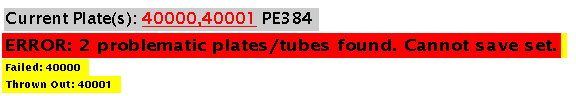

Stock/Receiving:
Allow batch retrieval of items from boxes (much quicker for extracting multiple standard items). (Issue #588)
Allow tracking of component number of kits/reagents. (Issue #668).

Plates/Tubes:
Increase functionality of Find Plates function to search by format (Issue 644).
New criteria form in Plates home page allows more flexible searching and grouping of results:
New results layout allows better visualization of storage locations and summaries:
Protocol:
Implement safety guard to prevent plates/tubes marked as Failed to go through protocols (Issue #679).
User encounters an error when trying to save plates that are either Failed, Throw Out or Exported into a plate set:

Form:
Add Search/New functionality for fields in DB_Form (just like the stock forms) (Issue #685).
ReArray:
View rearray using a plate view (with a colour legend for indicating library) showing source plate/well in each cell (Issue #554)
Send email notification to person who defined rearray if yield report disagrees with assignment (Issue #625).
Add tooltip for rearray options to clarify defnitions (and display options in chronological order) (Issue #626).
Allow traceback of primers through custom primer plates applied as a solution (Issue #628).
Allow inheritance of no grows and slow grows from rearray source plates (Issue #691).
Plate:
Allow user to input a list of wells and convert to 96 wells/384 wells (Issue #608).
The form for entering wells to be converted:

Results shown after clicking on 'Convert Wells':
NGs/SGs/Unused Wells page - Need to remove current plate from the list of plates under Future Generations (Issue #656).
Library:
Create ReArray_Plate table for Sequencing_Library types of ReArrayed (Issue #688).
Libraries are now tracked with Library Container barcodes (Issue #690).
Handling of RNA Original Source and RNA Source:
Enable storage of all relevant information for RNA sources and RNA extraction samples (Issue #590).
Create barcodes for Original Source (ORS) and Library Container (SRC) (Issue #690).
Protocol and Sample Handling:
Support pooling of tubes within one RNA Source (Issue #569).
Setup of pooling step:
A pooling step when cycling through a protocol:
The ancestry shown for a tube that has sample pooled to another tube:
The ancestry shown for a pooled tube:
Support extraction of DNA, RNA, Protein samples: (Issue #590).
Setup of extraction step (e.g. DNA extraction):
An extraction step when cycling through a protocol:
The ancestry shown for a tube that has sample extracted to another tube:
The ancestry shown for a:

Support volume tracking for tube transfers (and include in protocol options) (Issue #570).
Setup of a transfer/aliquot step with volume tracked:
A transfer step with volume tracked:
Tube Solution barcodes (Issue #602).